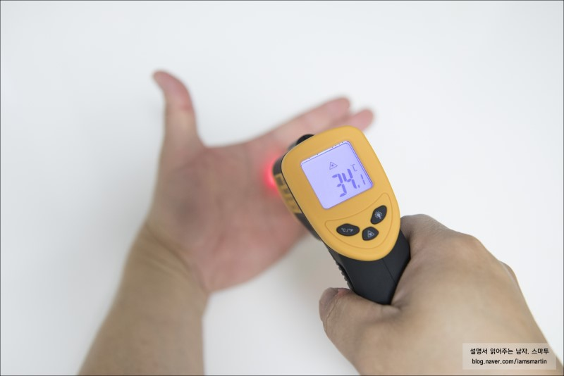

돌아가기
양상추 재배하기
목차
- 잘 자라는 환경 조건
- 품종 선택
- 양상추 키우기
- 수확하기
1. 잘 자라는 환경 조건

- 싹트는 온도 : 15~20˚C
- 잘 자라는 온도 : 생육 15~20˚C, 결구 10~16˚C
- 햇빛의 세기 : 생육 초기에 광이 부족하면 엽육이 얇아지고, 엽면적도 작아진다.
- 토양조건 : 건조한 사질토나, 지하수위가 높은 점질 땅에서는 생육이 나쁘므로 유기질이 풍부하고 관수하기 편리한 포장인 양토에서 재배하는 것이 좋다.
산성이 강한 토양 즉 pH5 이하나, pH 8 이상의 알칼리성 토양에서는 생육이 나쁘고 수량도 매우 떨어진다.
- 토양산도 : pH 5.8~6.6
2. 품종 선택
- 토양 수분과 시비량은 구의 형성과 비대의 밀접한 관계가 있으므로 재배시기에 맞는 품종선택이 중요하다.
3. 양상추 키우기
3-1. 씨 뿌리기
- 씨 뿌리는 방법 : 육모
- 싹트는 온도 : 15~20˚C
- 싹트는 기간 : 2일
- 필요한 씨의 양 : 40ml / 10a
3-2. 모 기르기
- 모 기르는 기간 : 20~30일
- 모 기르는 온도 : 15~23˚C, 밤 10˚C 이상 유지
- 폿트육모 : 파종상에서 7~10일간 육모한 후, 본역 1~1.5매의 묘를 폿트에 이식한다.
정식은 본엽 4~5매가 되면 실시한다. 트레이 육모시에는 128-200공 트레이를 사용하며, 시중 종자상에서 판매되는 상토를 구입하여 사용하는 것이 좋다.
3-3. 밭 만들기
- 이랑 너비 : 1줄 재배 80cm, 2줄 재배 120cm(포기간격 35cm)
- 거름주기(밑거름) : 퇴비 7kg, 고토석회 400g (밭갈기 2∼3주 전)요소 143g, 용성인비 200g, 염화가리 83g (아주심기 2주 전)
- 거름주기(웃거름) : 재배기간 중 요소 7g, 염화가리 5g씩 3회
- 재배 온도 : 생육 15∼20℃, 결구 10∼16℃
- 물 주기 : 2-3일에 1회. 건조에 강하며, 다습에는 약함. 결구 개시 이후에는 토양수분이 많은 편이 좋다.
- 관리 : 정식 후 15일경에 웃거름을 주어서 초기생육을 왕성하게 유도하고 이때 중경(작물 사이의 토양의 표면을 가볍게 긁어주는 김매기작업)과 제초작업도 동시에 실시한다.
결구중기에 건조하면 수량이 크게 떨어지므로 중기관리에 신경을 쓰고, 건조한 것보다는 약간 습한 쪽이 수량과 품질이 좋다.
- 물관리 : 날씨가 좋은 날의 오전 중에 이랑사이의 골에 물을 흘려 주는데, 1회의 관수량을 적게 하고 회수를 늘려 주는 것이 좋다.
4. 수확하기
수확 방법_포기수확
- 봄 재배는 90-120일이고 가을재배는 60-80일이면 수확이 가능하다.
수확요령은 아침 이슬이나 서리가 없어졌을 때 결구상태를 보아 가면서 약간 일찍 수확한다.
겉잎이 달린 상태로 수확을 하고 이후 다듬는다.
우리 모두 건강하고 싱싱한 양상추를 재배해 보아요!!